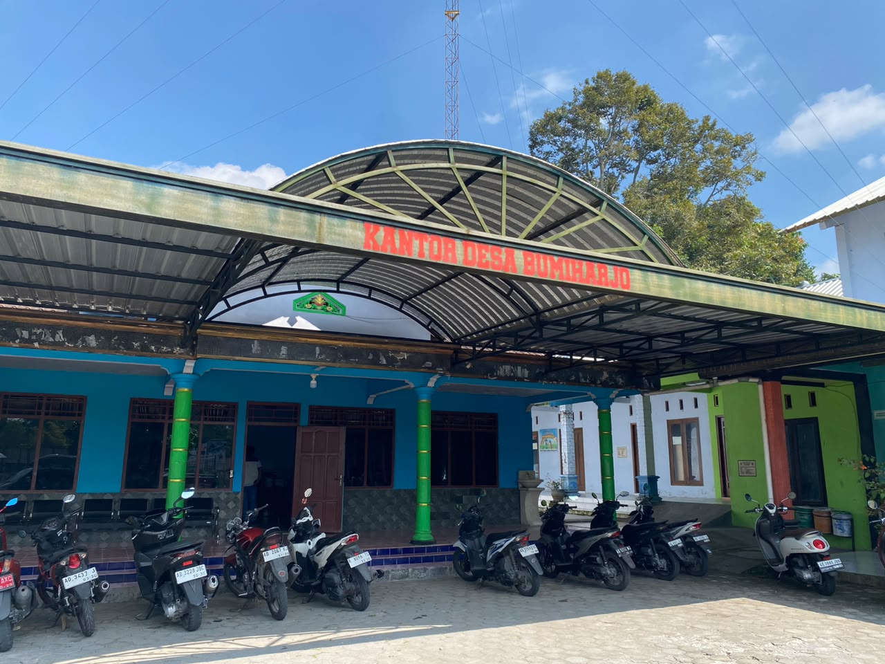

Selamat datang di Website Profil Desa Bumiharjo, Kecamatan Kemalang, Kabupaten Klaten, Jawa Tengah. Website ini menyediakan informasi mengenai profil desa, potensi, fasilitas, UMKM, peta wilayah, serta informasi lainnya yang dapat diakses oleh masyarakat.
Sekilas informasi mengenai Desa Bumiharjo

Desa Bumiharjo merupakan salah satu desa di Kecamatan Kemalang, Kabupaten Klaten, Provinsi Jawa Tengah. Desa ini memiliki berbagai potensi di bidang pertanian, UMKM, sumber daya alam, serta kehidupan masyarakat yang masih menjunjung tinggi nilai gotong royong.
Website ini dibuat sebagai media informasi digital untuk membantu masyarakat, pengunjung, serta pemerintah dalam memperoleh informasi mengenai profil desa, potensi, fasilitas umum, peta wilayah, dan informasi lainnya secara mudah dan cepat.
Baca SelengkapnyaData dapat diperbarui sesuai hasil pendataan
Jumlah Penduduk
Kepala Keluarga
RT
Hektare Wilayah
Jelajahi berbagai informasi mengenai desa
Informasi sejarah, visi misi, dan struktur organisasi desa.
Menampilkan lokasi dan informasi wilayah administrasi desa.
Berbagai potensi lokal yang dapat dikembangkan dan dipromosikan.
Informasi mengenai pelaku UMKM dan produk unggulan Desa Bumiharjo.
Pengumuman, agenda kegiatan, dan informasi penting desa.
Daftar fasilitas umum yang tersedia di Desa Bumiharjo.
Assalamu'Alaikum Warahmatullahi Wabarakatuh.
Website ini hadir sebagai wujud transformasi Desa
Bumiharjo menjadi desa yang mampu memanfaatkan teknologi
informasi dan komunikasi yang terintegrasi ke dalam sistem
online. Kehadiran platform ini merupakan komitmen kami
dalam mendorong keterbukaan informasi publik, meningkatkan
kualitas pelayanan publik, serta menggerakkan kegiatan
perekonomian di desa. Melalui inovasi ini, kami berharap
dapat mewujudkan Desa Bumiharjo sebagai desa wisata yang
berkelanjutan, adaptif dan tanggap terhadap mitigasi
perubahan iklim, serta tumbuh menjadi desa yang
mandiri.
Terima kasih yang sebesar-besarnya kami sampaikan kepada
semua pihak yang telah banyak memberikan dukungan dan
kontribusi, baik berupa tenaga, pikiran, maupun semangat,
sehingga website resmi Desa Bumiharjo ini dapat
terealisasi dengan baik.
Wassalamu'Alaikum Warahmatullahi Wabarakatuh.